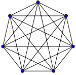
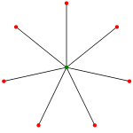
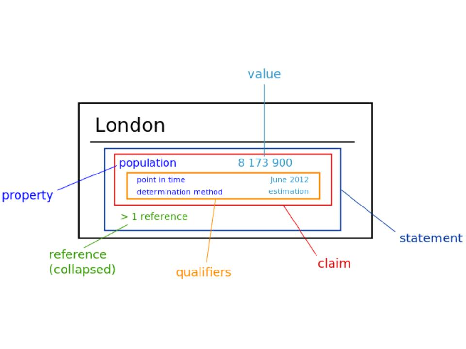

<!doctype html>
<html lang="it">

	<head>
		<meta charset="utf-8">

		<title>Open data</title>

		<meta name="description" content="Open data 2017">
		<meta name="author" content="Andrea Zanni">

		<meta name="apple-mobile-web-app-capable" content="yes" />
		<meta name="apple-mobile-web-app-status-bar-style" content="black-translucent" />

		<meta name="viewport" content="width=device-width, initial-scale=1.0, maximum-scale=1.0, user-scalable=no">

		<link rel="stylesheet" href="reveal.js/css/reveal.css">
		<link rel="stylesheet" href="reveal.js/css/theme/black.css" id="theme">

		<!-- For syntax highlighting -->
		<link rel="stylesheet" href="reveal.js/lib/css/zenburn.css">

		<!-- If the query includes 'print-pdf', use the PDF print sheet -->
		<script>
			document.write( '<link rel="stylesheet" href="reveal.js/css/print/' + ( window.location.search.match( /print-pdf/gi ) ? 'pdf' : 'paper' ) + '.css" type="text/css" media="print">' );
		</script>

		<!--[if lt IE 9]>
		<script src="reveal.js/lib/js/html5shiv.js"></script>
		<![endif]-->
	</head>

	<body>

		<div class="reveal">

            <div class="slides">

                
<section data-markdown data-separator="^\n---\n$" data-separator-vertical="^\n--\n$" data-notes="^Note:">
<script type="text/template">

<!-- .slide: data-background="#bb0000" -->

##Open data

Andrea Zanni 

[@aubreymcfato](http://twitter.com/aubreymcfato)

</script>
</section>


<section data-markdown data-separator="^\n---\n$" data-separator-vertical="^\n--\n$" data-notes="^Note:">
<script type="text/template">

<!-- .slide: data-background="#0A2A34" -->

Why are open data important?

--

<!-- .slide: data-background="#0A2A34" -->

* structured data <!-- .element: class="fragment" data-fragment-index="1" -->
* scalability <!-- .element: class="fragment" data-fragment-index="2" -->
* data analysis <!-- .element: class="fragment" data-fragment-index="3" -->
* aggregation <!-- .element: class="fragment" data-fragment-index="4" -->
* data visualization <!-- .element: class="fragment" data-fragment-index="5" -->
* network effects <!-- .element: class="fragment" data-fragment-index="6" -->
* machine learning <!-- .element: class="fragment" data-fragment-index="7" -->

--

<!-- .slide: data-background="#0A2A34" -->

_"buildability"_

--

<!-- .slide: data-background="#0A2A34" -->

##data are infrastructure

new services, new data, new tools

--

<!-- .slide: data-background="#0A2A34" -->

letting other people creating _value_ out of my data

--

<!-- .slide: data-background="#0A2A34" -->

##ecosystem

--

<!-- .slide: data-background="#0A2A34" -->

##digital commons

---

<!-- .slide: data-background="#ffffff" -->

##Linked Open Data

--

<!-- .slide: data-background="#ffffff" -->

"dati aperti e collegati fra di loro e con altri dataset"

--

<!-- .slide: data-background="#ffffff" -->

</img>

--

<!-- .slide: data-background="#ffffff" -->

###Query

--

<!-- .slide: data-background="#ffffff" -->

"make estremely specific questions tapping the full potential of data granularity"

--

<!-- .slide: data-background="#ffffff" -->

Average gestation period of genera, color-coded by order

--

<!-- .slide: data-background="#ffffff" -->

<iframe style="width:200vw; height:95vh;" scrolling="yes" frameborder="0" src="https://query.wikidata.org/embed.html#%23%20Average%20gestation%20period%20of%20genera%2C%20color-coded%20by%20order%0A%23defaultView%3ABubbleChart%0ASELECT%20%3Fgenus%20%28AVG%28%3Fperiod%29%20AS%20%3Fperiod%29%20%28SAMPLE%28%3Flabel%29%20AS%20%3FgenusLabel%29%20%28SAMPLE%28%3Frgb%29%20AS%20%3Frgb%29%0AWHERE%0A%7B%0A%20%20%7B%0A%20%20%20%20BIND%28%22en%22%20AS%20%3Flanguage%29.%0A%20%20%20%20%23%20find%20species%20with%20gestation%20period%20and%20convert%20to%20seconds%20%28SI%20base%20unit%29%0A%20%20%20%20%3Fspecies%20p%3AP3063%2Fpsv%3AP3063%20%5B%0A%20%20%20%20%20%20wikibase%3AquantityAmount%20%3FbasePeriod%3B%0A%20%20%20%20%20%20wikibase%3AquantityUnit%20%5B%0A%20%20%20%20%20%20%20%20p%3AP2370%2Fpsv%3AP2370%20%5B%0A%20%20%20%20%20%20%20%20%20%20wikibase%3AquantityAmount%20%3FunitPeriod%3B%0A%20%20%20%20%20%20%20%20%20%20wikibase%3AquantityUnit%20wd%3AQ11574%0A%20%20%20%20%20%20%20%20%5D%0A%20%20%20%20%20%20%5D%0A%20%20%20%20%5D.%0A%20%20%20%20%23%20convert%20back%20to%20days%0A%20%20%20%20BIND%28%28%3FbasePeriod%20%2a%20%3FunitPeriod%29%2F%2860%2a60%2a24%29%20AS%20%3Fperiod%29.%0A%20%20%20%20%23%20find%20genus%0A%20%20%20%20%3Fspecies%20wdt%3AP171%2a%20%3Fgenus.%0A%20%20%20%20%3Fgenus%20wdt%3AP105%20wd%3AQ34740.%0A%20%20%20%20%23%20find%20a%20good%20label%20%E2%80%93%20trivial%20name%2C%20else%20label%2C%20else%20%E2%80%9C%3Cno%20name%3E%E2%80%9D%0A%20%20%20%20OPTIONAL%20%7B%0A%20%20%20%20%20%20%3Fgenus%20wdt%3AP1843%20%3FtrivialName.%0A%20%20%20%20%20%20FILTER%28LANG%28%3FtrivialName%29%20%3D%20%3Flanguage%29.%0A%20%20%20%20%7D%0A%20%20%20%20OPTIONAL%20%7B%0A%20%20%20%20%20%20%3Fgenus%20rdfs%3Alabel%20%3FgenusLabel.%0A%20%20%20%20%20%20FILTER%28LANG%28%3FgenusLabel%29%20%3D%20%3Flanguage%29.%0A%20%20%20%20%7D%0A%20%20%20%20BIND%28IF%28BOUND%28%3FtrivialName%29%2C%3FtrivialName%2CIF%28BOUND%28%3FgenusLabel%29%2C%3FgenusLabel%2C%22%3Cno%20name%3E%22%29%29%20AS%20%3Flabel%29.%0A%20%20%20%20%23%20find%20order%0A%20%20%20%20%3Fgenus%20wdt%3AP171%2a%20%3Forder.%0A%20%20%20%20%3Forder%20wdt%3AP105%20wd%3AQ36602.%0A%20%20%20%20%23%20choose%20%E2%80%9Crandom%20but%20deterministic%E2%80%9D%20color%20per%20order%3B%20you%20can%20play%20around%20with%20%22-%22%20%28can%20be%20any%20string%29%20to%20find%20a%20pleasing%20resulting%20color%20distribution%0A%20%20%20%20BIND%28UCASE%28SUBSTR%28SHA256%28CONCAT%28%22-%22%2C%20STR%28%3Forder%29%29%29%2C%200%2C%206%29%29%20AS%20%3Frgb%29.%0A%20%20%7D%0A%20%20UNION%0A%20%20%7B%0A%20%20%20%20%23%20add%20scale%0A%20%20%20%20VALUES%20%28%3Fgenus%20%3Fperiod%20%3Flabel%29%20%7B%0A%20%20%20%20%20%20%28wd%3AQ23387%207%20%22week%22%40en%29%0A%20%20%20%20%20%20%28wd%3AQ5151%2030.436875%20%22month%22%40en%29%0A%20%20%20%20%20%20%28wd%3AQ1643308%2091.310625%20%223%20months%22%40en%29%0A%20%20%20%20%20%20%28wd%3AQ2269240%20182.62125%20%226%20months%22%40en%29%0A%20%20%20%20%20%20%28wd%3AQ577%20365.2425%20%22year%22%40en%29%0A%20%20%20%20%7D%0A%20%20%20%20BIND%28%22CCCCCC%22%20AS%20%3Frgb%29.%0A%20%20%7D%0A%7D%0AGROUP%20BY%20%3Fgenus">

---

##What does _open_ mean?

--

let's take a step back. 
the history of free software

--

0
1
2
3
4

--

##Creative Commons

---

<!-- .slide: data-background="#1d9608" -->

##WIKIDATA

--

<!-- .slide: data-background="#1d9608" -->

"Wikipedia dei dati"

--

<!-- .slide: data-background="#1d9608" -->

collaborative _knowledge base_

--

<!-- .slide: data-background="#1d9608" -->

dati centralizzati in un unico luogo, per tutte le Wikipedie e i progetti wiki

--

<!-- .slide: data-background="#ffffff" -->

</img>

</img>

</img>


--

<!-- .slide: data-background="#ffffff" -->

</img>

</script>
</section>


            </div>

		</div>

		<script src="reveal.js/lib/js/head.min.js"></script>
		<script src="reveal.js/js/reveal.js"></script>

		<script>

			// Full list of configuration options available here:
			// https://github.com/hakimel/reveal.js#configuration
			
			Reveal.initialize({
				controls: true,
				progress: false,
				history: true,
				center: true,

				theme: Reveal.getQueryHash().theme, // available themes are in /css/theme
				transition: 'default', // default/cube/page/concave/zoom/linear/fade/none


				// Optional libraries used to extend on reveal.js
				dependencies: [
					{ src: 'reveal.js/lib/js/classList.js', condition: function() { return !document.body.classList; } },
					{ src: 'reveal.js/plugin/markdown/marked.js', condition: function() { return !!document.querySelector( '[data-markdown]' ); } },
					{ src: 'reveal.js/plugin/markdown/markdown.js', condition: function() { return !!document.querySelector( '[data-markdown]' ); } },
					{ src: 'reveal.js/plugin/highlight/highlight.js', async: true, callback: function() { hljs.initHighlightingOnLoad(); } },
					{ src: 'reveal.js/plugin/zoom-js/zoom.js', async: true, condition: function() { return !!document.body.classList; } },
                    
					{ src: 'reveal.js/plugin/notes/notes.js', async: true, condition: function() { return !!document.body.classList; } }
                    
                    
				]
			});

		</script>

	</body>
</html>
